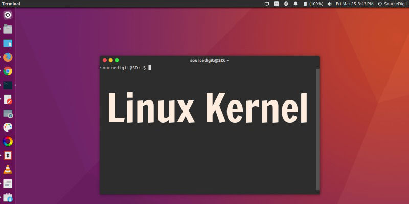

Changing Linux Kernel Version
The kernel most basic functionality is resource management of the system, the kernel is the brain of your hardware. The Linux kernel optimizes the usage of the processor so that it can efficiently manage and complete tasks on your OS quickly.
Checking the version of your Linux kernel using this command in the command line terminal window, provides information about the Linux Kernel version. $ uname -rmy Linux kernel version is 5.4.0-48-generic.
See below the explanation of what this version numbers represents: 5 – the kernel version
4 – the current major revision
0 – the current minor revision
48 – the bug fixes and patches applied to this release.
They are a many reasons to change one’s Linux Kernel version. lets say you've installed an app that would run better on a newer kernel version or you prefer an improved speed performance, then changing your kernel version is inevitable. You should keep in mind that installing a new kernel doesn't mean that the older kernel has been removed from the system.
The purpose of this post is to outline steps on how to change your kernel version on any Linux distribution. follow these steps below to successfully change your kernel version.
Here we will cover kernel installation for:
Ubuntu
CentOS (CentOS7 and CentOS8)
Debian
Changing Kernel version for UBUNTU
Step1: Ensure your system is up to date by running the following command on your terminal window $ sudo apt updatethis command updates all repositories on your system.
Step2: Upgrade all the packages that are already installed by running this command $ sudo apt upgrade
Step3: Verify the kernel version you are currently running, using the command $ uname -routput: 5.4.0-48-generic$ uname -sroutput: Linux 5.4.0-48-generic$ uname -msroutput: Linux 5.4.0-48-generic x86_64
Step4: Create a directory that will store the mainline kernel version you are about to download using the command $ mkdir -p newVersionenter the directory $ cd newVersion
Step5: Checkout the latest kernel versions for your Ubuntu here https://kernel.ubuntu.com/~kernel-ppa/mainline/
while in the directory, use this command below to download a kernel version of your choice ~/myversion$ wget <link_to_version>
Step6: Install the downloaded package using the dpkg l command. ~/myversion$ dpkg -i <package.deb>
Step7: run the update-grub command and the new kernel will be successfully installed. reboot the machine and by default Ubuntu boots into the new kernel version. $ update-grub$ rebootyou can now check your kernel version with the uname command.
To change back to an older kernel version on your system, when the system is booting on the GRUB menu select the advanced options for Ubuntu. If the GRUB menu doesn't show use the Esc key to bring up the GRUB menu.
A list of all the Linux kernels installed on your system can be found there, you can select any of the older versions you want to revert to.
Changing Kernel version for CentOS
Step1: update your system by running the following command on your terminal window $ sudo yum -y updateThis command updates all repositories on your system.
Step2: Verify the kernel version you are currently running, using the command below, also note that the kernel version may vary depending on what you have currently installed.$ uname -routput: 5.4.0-48-generic$ uname -sroutput: Linux 5.4.0-48-generic$ uname -msroutput: Linux 5.4.0-48-generic x86_64
Step3: To install the new kernel version, enable the ELRepo repository in your terminal window using the command $ sudo rpm --import https://www.elrepo.org/RPM-GPG-KEY-elrepo.orgTake note that – for CentOS this command installs the GPG key to verify that the software is authentic for installation.
Next, is to run the command that will install the repository.
For CentOS7 run the command $ sudo rpm -Uvh https://www.elrepo.org/elrepo-release-7.0-3.el7.elrepo.noarch.rpmFor CentOS8 run the command $ sudo dnf install https://www.elrepo.org/elrepo-release-8.0-2.el8.elrepo.noarch.rpm
Step4: Check the list of available kernel, by entering the command:
For CentOS7 run the command$ yum list available --disablerepo='*' --enablerepo=elrepo-kernelFor CentOS8 run the command$ dnf repolistIn the kernel list, the line that says kernel-lt indicates a stable long-term support release and kernel-ml represents a mainline release which is a short-term support that will be updated frequently.
You can also see the kernel version looking something like ‘4.4.193-1.el7.elrepo’, choose which kernel version you want to install.
Step5: To install the kernel package of of your choice run the command:
For CentOS7 run the command$ sudo yum --enablerepo=elrepo-kernel install <kernel-package>For CentOS8 run the command: $ sudo dnf --enablerepo=elrepo-kernel install <kernel-package>The system will download the software, and ask you if it’s OK to install – say yes.
Step6: Reboot your machine using the command: $ rebootThe GRUB menu will show up, enabling you to select the kernel version you just installed, hit enter and your operating system should boot normally. If the GRUB menu doesn’t show just press the Esc key.
Step7: Check if the new kernel version is compatible with your system and is working correctly, then you can decide to set it as the default kernel version by editing the GRUB boot utility.
Step8: Set default kernel version, navigate to etc/default/ and open the grub file using the command:$ sudo vim /etc/default/grubgo to the line that says GRUB_DEFAULT=X change the value “X” to any of the versions you want on the GRUB list for example GRUB_DEFAULT=0this enables the boot loader default to the first kernel version on the GRUB list.
Save the file and regenerate the kernel configurations by entering the following command: $ sudo grub2-mkconfig -o "/path/to/your/grub.cfg"in this case path/to/your/grub.cfg is $ sudo grub2-mkconfig -o /boot/grub2/grub.cfg
Step9: Reboot the machine once more and by default CentOS will boot into the new kernel version.$ rebootyou can now check your kernel version
Changing Kernel version for Debian
Step1: Ensure your system is up to date by running the following command on your terminal window $ sudo aptitude updatethis command updates all repositories on your system.
Step2: Verify the kernel version you are currently running, using the command below, also note that the kernel version may vary depending on what you have currently installed.$ uname -routput: 5.4.0-48-generic$ uname -sroutput: Linux 5.4.0-48-generic$ uname -msroutput: Linux 5.4.0-48-generic x86_64
Step3: upgrade all the packages that are already installed by running this command: $ sudo aptitude upgradeSearch for available kernels using the command: $ sudo aptitude search linux-image this command will generate a list of available kernels.
Step4: choose a kernel from the list and install it using the command: $ sudo aptitude install <kernel-package>
Step5: reboot your machine using the command: $ rebootthe GRUB menu will show up, displaying a list of all the Linux kernels installed on your system, select the kernel version you just installed, hit enter and your operating system should boot normally. If the GRUB menu doesn’t show just press the Esc key.
Step6: check if the new kernel version is compatible with your system and is working correctly, then you can decide to set it as the default kernel version by editing the GRUB boot utility.
Step7: Set default kernel version, navigate to etc/default/ and open the grub file using the command:$ sudo vim /etc/default/grubgo to the line that says GRUB_DEFAULT=X change the value “X” to any of the versions you want on the GRUB list for example GRUB_DEFAULT=0this enables the boot loader default to the first kernel version on the GRUB list.
Save the file and regenerate the kernel configurations by entering the following command: $ sudo grub2-mkconfig -o "/path/to/your/grub.cfg"in this case path/to/your/grub.cfg is $ sudo grub2-mkconfig -o /boot/grub2/grub.cfg
Step8: Reboot the machine once more and by default Debian will boot into the new kernel version.$ rebootyou can now check your kernel version